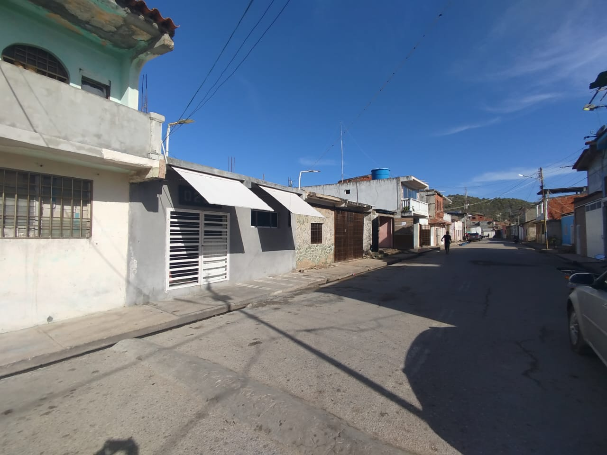
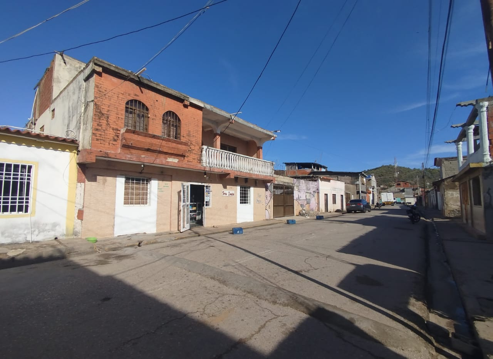
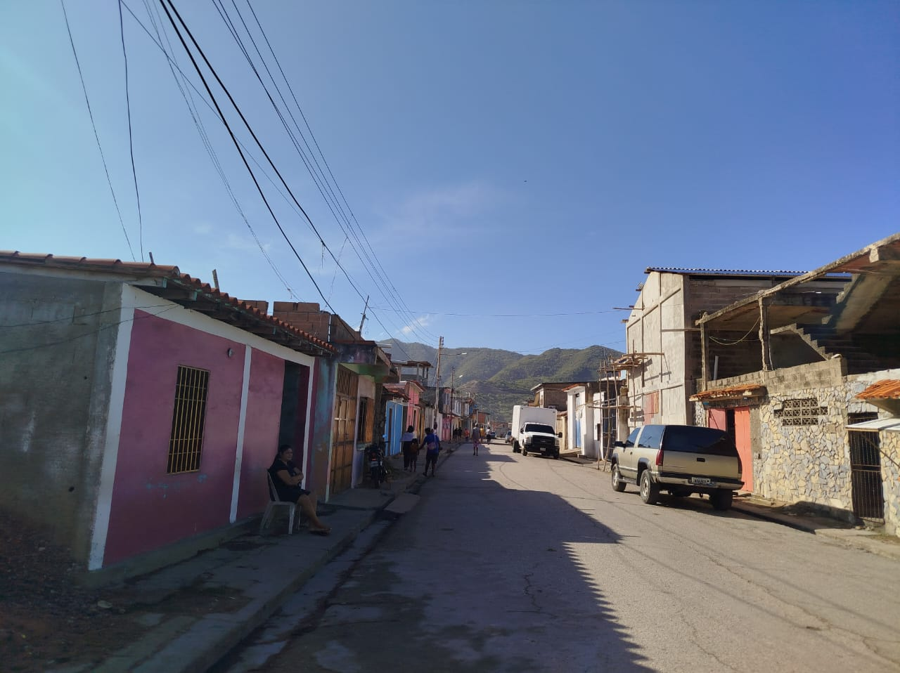
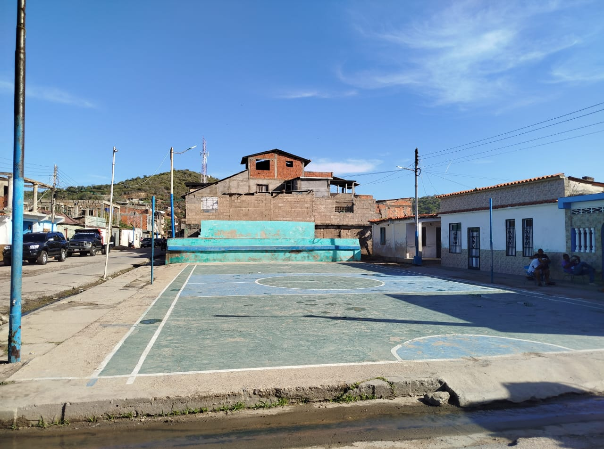

Este sector es uno de los puntos más dinámicos de la comunidad, ya que aquí se encuentra la escuela local, donde diariamente asisten los niños del pueblo, llenando las calles de alegría, movimiento y vida comunitaria. La presencia de los estudiantes convierte a este espacio en un lugar lleno de energía y convivencia. Al final de su calle principal se ubica la plazoleta del sector, un punto de encuentro donde se realizan diversos eventos deportivos, religiosos, culturales y festivos que fortalecen la unión entre los habitantes. Este espacio funciona como un centro de actividades donde la comunidad comparte y celebra sus tradiciones. Además, el sector cuenta con varias tiendas de comida rápida que ofrecen opciones gastronómicas al servicio de residentes y visitantes, convirtiéndolo en un lugar agradable para reunirse, disfrutar y compartir momentos en un ambiente comunitario.



